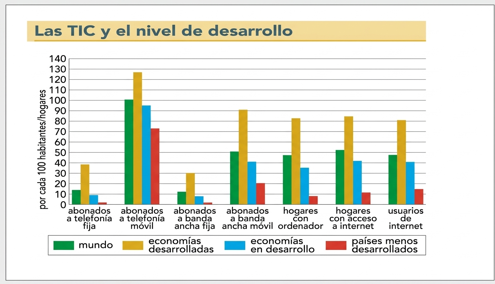
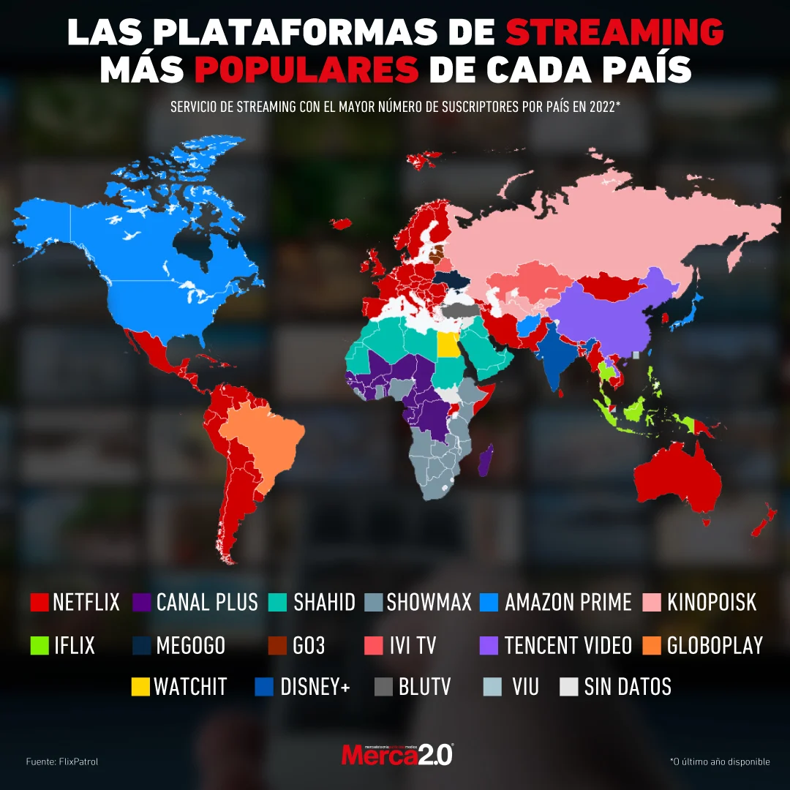
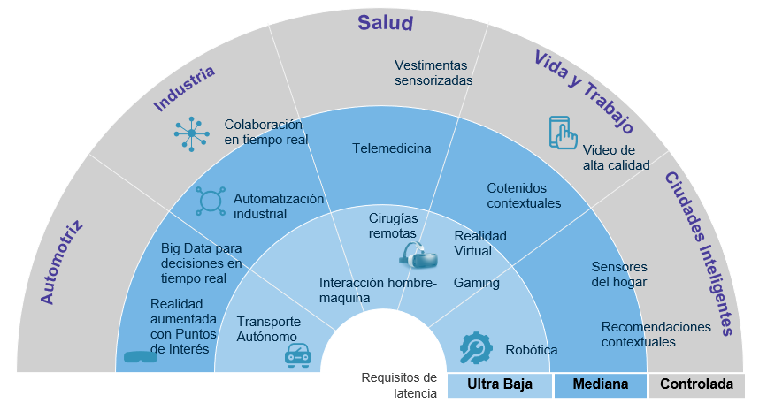

Navegación
¡Explora!
 (6).png)
¿Qué son los servicios sociales?
¿Qué son los servicios sociales?
Son actividades que forman parte del Estado del Bienestar, como son:
a)Sanidad.- Su objetivo es prevenir y curar enfermedades, además de investigar nuevas curas (I+D+i). Existen modelos universales, como el de Francia o España, donde el Estado financia la mayor parte del gasto, frente a modelos de gestión privada como el de Estados Unidos, donde millones de personas pueden carecer de cobertura si no tienen seguro médico.
b)La educación.- Destinada a transmitir conocimientos y desarrollar las capacidades de las personas desde la infancia hasta la etapa universitaria. Es un pilar del desarrollo económico, ya que genera una mano de obra más cualificada.
c)La protección de personas vulnerables.- Incluye residencias para mayores, centros para personas con discapacidad, comedores sociales y centros de acogida para mujeres maltratadas.
¿Por qué son importantes para el desarrollo?
|
Si hay servicios sociales de calidad… |
Si faltan servicios sociales… |
|
Mejoran la calidad de vida de las personas , y promueven la igualdad de oportunidades y la cohesión social. |
Se mantienen la pobreza y la desigualdad |
|
Integran a los colectivos más vulnerables |
Hay más exclusión social y falta de oportunidades |
|
Favorecen la autonomía personal y la participación |
Se limita el desarrollo académico y social |
|
Promueven la prevención de riesgos y la cohesión social |
Se dificulta el desarrollo económico y social |
La Sanidad en España.
La sanidad pública española está considerada como una de las mejores del mundo. Se financia a través de los impuestos y ofrece cobertura a todos los ciudadanos, lo que se traduce en indicadores de bienestar muy altos, como una esperanza de vida que supera los 83 años, similar a la de Francia. España destina aproximadamente el 8,9% de su PIB a la sanidad. Además, es un sector con una altísima presencia femenina en su mercado laboral y con un importante sector dedicado a actividades de I+D+i (Investigación, Desarrollo e Innovación), fundamentales para descubrir curas y mejorar la calidad de vida.
La Educación y Asistencia Social.
La educación en España es obligatoria y gratuita para todos los niños entre los 6 y los 16 años. Al igual que en la sanidad, en el cuerpo docente predominan las mujeres. Por otro lado, los servicios de asistencia social se dirigen a los colectivos más vulnerables: personas mayores, menores en situación de dependencia, inmigrantes o mujeres maltratadas.
Centros de ayuda: Incluyen residencias de mayores, comedores sociales y servicios de atención telefónica gratuitos y anónimos, como los destinados a combatir el acoso escolar.
El sector cuaternario
¿Qué es el sector cuaternario?Es el sector de los servicios más avanzados y especializados. Incluye actividades como la investigación científica, la educación superior, la tecnología, la inteligencia artificial, la biotecnología o la consultoría.
Sus rasgos principales son:
● Se basa en el conocimiento y la innovación. Las empresas más innovadoras invierten en I+D+i (Investigación, Desarrollo e Innovación) para crear nuevos productos y servicios.
● Requiere trabajadores con alta formación. Suelen tener estudios universitarios y recibir buenos salarios
● Es fundamental para el crecimiento económico y la competitividad de los países. Los descubrimientos se protegen con patentes, que muestran el nivel de desarrollo de un país.
● Sus avances benefician a otros sectores (agricultura, industria, servicios) y para mejorar la vida de las personas (por ejemplo, en salud, alimentación o tecnología).
Ejemplos de actividades del sector cuaternario
|
Actividad |
Ejemplo concreto |
|
Investigación y desarrollo (I+D+i) |
Laboratorios, universidades |
|
Consultoría tecnológica y financiera |
Empresas de asesoría |
|
Educación superior |
Universidades, centros de formación |
|
Telecomunicaciones y TIC |
Empresas de internet, ciberseguridad |
|
Biotecnología e inteligencia artificial |
Startups tecnológicas |
El papel de los servicios digitales.
El funcionamiento del sector terciario moderno depende de las telecomunicaciones, que han experimentado un impulso masivo gracias a nuevos medios de transmisión como los satélites, el láser y la fibra. Estos elementos conforman las llamadas "autopistas de la información", reflejadas a través del desarrollo de Internet o la “red de redes”. Sin embargo, esta red presenta una brecha digital condicionada por desequilibrios económicos y de infraestructura; Mientras que en los países desarrollados la penetración es casi total, en zonas rurales o países menos favorecidos, la ausencia de redes de calidad provoca exclusión social y territorial.
.png)

Las Tecnologías de la Información y la Comunicación (TIC) han revolucionado los servicios tradicionales y han dado lugar a nuevos modelos de negocio caracterizados por:
1) Cambios en los medios de comunicación
● Medios de masas: Antes, la comunicación era unidireccional (radio, prensa, TV). Con Internet, ahora hay una mayor interacción (periódicos digitales, pódcast y plataformas de streaming) que permiten que el usuario no solo consuma, sino que cree y comparta información.
● Medios interpersonales : Las redes sociales han ampliado la comunicación, facilitando el acceso a la información y la libertad de expresión. Sin embargo, la rapidez y cantidad de información han provocado la proliferación de noticias falsas, haciendo necesario el pensamiento crítico.

- Ampliación de los servicios digitales de entretenimiento.
● Plataformas como YouTube, redes sociales y servicios de streaming han crecido enormemente, cambiando los hábitos de ocio y consumo digital en todo el mundo. En el ámbito económico, la automatización del marketing permite a las empresas optimizar sus campañas y convertir clientes potenciales en usuarios fieles mediante el análisis de su comportamiento en la red.
- Nuevas tecnologías: 5G , blockchain e Inteligencia Artificial (IA)
● 5G : Permite conectar millones de dispositivos en tiempo real, facilitando el desarrollo del Internet de las Cosas (IoT), la creación de ciudades inteligentes, operar vehículos autónomos y la expansión de la realidad virtual.
● Blockchain : Aporta seguridad y transparencia a las transacciones digitales, no solo en finanzas, sino también en gestión de contratos y trazabilidad de datos , mediante bases de datos compartidos sin intermediarios.
La Combinación 5G + blockchain ha permitido que dispositivos conectados operen y realicen transacciones de forma autónoma y segura, impulsando la economía digital.

● El Papel de la Inteligencia Artificial (IA): La IA se integra como una actividad de alta productividad dentro del sector terciario superior o cuaternario. Su relevancia radica en:
- Análisis de Datos (Big Data): Las empresas de servicios avanzados utilizan la IA para procesar volúmenes masivos de información y realizar planificaciones estratégicas.
- Innovación en la Curva del Valor: la IA potencia las fases de I+D+i y diseño, que son las que generan mayor valor añadido y mejores salarios, desplazando el peso económico de la fabricación física hacia la inteligencia aplicada al producto
- Soporte Multisectorial: Los avances en IA no solo benefician a los servicios, sino que optimizan la productividad de la agricultura y la industria mediante procesos inteligentes y autónomos.
- Nuevas Fronteras (Metaverso): El desarrollo de mundos virtuales o el Metaverso se perfila como la próxima gran evolución de los servicios digitales, donde a través de avatares se podrán realizar reuniones de trabajo y transacciones comerciales en una realidad alternativa con economía propia.